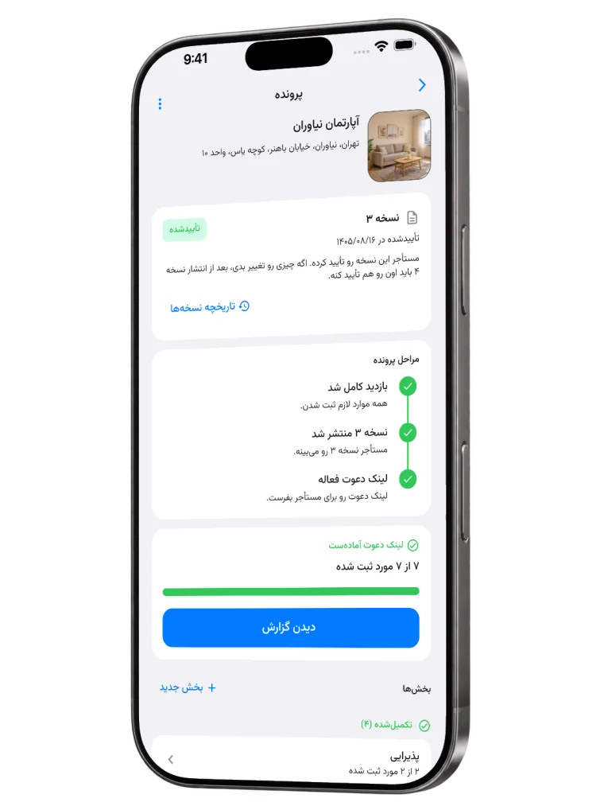
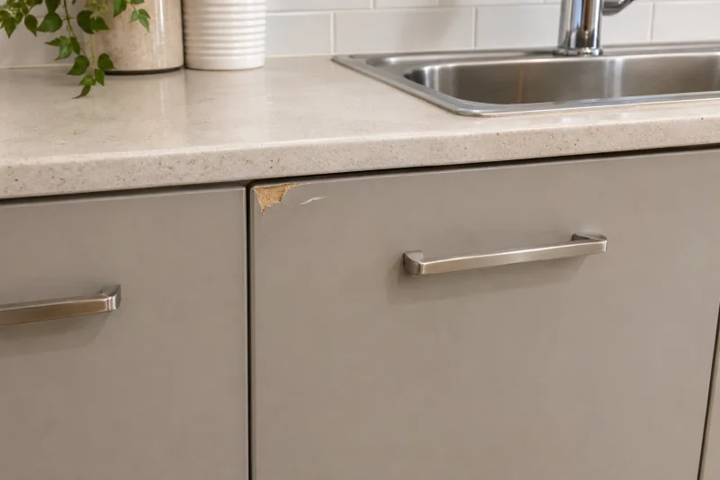

مالک هستید؟ با جزئیات تحویل بدید.
از هر اتاق عکس بگیرید، وضعیتش رو بنویسید و کنتورها و وسایل تحویلی رو ثبت کنید. بعد گزارش رو برای مستأجر بفرستید.
چکلیست ملکعکس و یادداشتثبت وسایل تحویلی
ثبت وضعیت و تحویل ملک
با چکیار، مالک وضعیت اتاقها، عکسها، کنتورها و وسایل تحویلی رو ثبت میکنه؛ مستأجر گزارش رو بررسی میکنه و اگه موافق بود، تأییدش میکنه. هر دو طرف هم فایل PDF گزارش رو میگیرن.

همهچیز ثبت میشه تا هر دو طرف بدونن ملک رو با چه شرایطی تحویل میدن یا تحویل میگیرن.
از هر اتاق عکس بگیرید، وضعیتش رو بنویسید و کنتورها و وسایل تحویلی رو ثبت کنید. بعد گزارش رو برای مستأجر بفرستید.
گزارش مالک رو باز کنید، عکسها و جزئیات هر بخش رو ببینید و بعد همون نسخه رو تأیید کنید.
سه مرحله کوتاه؛ از ثبت جزئیات تا دریافت گزارش.
ثبت جزئیات
با هم عکس بگیرین، وضعیت رو بنویسین و عدد کنتورها رو ثبت کنین.
بررسی و تأیید
مالک گزارش رو منتشر میکنه. مستأجر همون نسخه رو میبینه و اگه موافق باشه، تأییدش میکنه.
دریافت گزارش
هر دو طرف میتونن فایل PDF گزارش رو برای مراجعه بعدی نگه دارن.
عکسها، وضعیت بخشهای مختلف، کنتورها و وسایل تحویلی همه در یک گزارش جمع میشن.

روکش گوشه بالای در کابینت کنار سینک لبپر شده.
چکلیستها و نکتههای ثبت وضعیت ملک برای مالک و مستأجر.
اتاقها، کنتورها، عکسها و وسایل تحویلی رو با هم مرور کن.
چکلیست مالک رو بخونبخشهای اصلی گزارش وضعیت ملک رو ببین.
اجزای گزارش رو ببینپیش از تأیید، جزئیات گزارش رو با وضعیت خونه مقایسه کن.
چکلیست مستأجر رو بخوناز هزینه و دسترسی به اطلاعات تا اصلاح جزئیات و تأیید گزارش؛ جواب سؤالهات رو اینجا پیدا کن.
امکانات نسخه فعلی چکیار رایگانه. لینک دریافت عمومی اپ هنوز منتشر نشده؛ وقتی صفحه رسمی چکیار در فروشگاهها فعال بشه، لینکها رو همینجا میذاریم.
بله. مستأجر باید با همون شماره موبایلی که مالک برای پرونده ثبت کرده حساب بسازه. بعد از ورود، میتونه گزارش رو ببینه و تأیید کنه.
نسخهای که منتشر شده تغییر نمیکنه. اگه اصلاح لازم باشه، مالک پیشنویس رو ویرایش میکنه و نسخه تازهای منتشر میکنه. مستأجر باید نسخه تازه رو دوباره بررسی کنه و اگه موافق بود، تأییدش کنه؛ تأیید قبلی برای نسخه جدید معتبر نیست.
بله. اگه به نسخه منتشرشده دسترسی داری، میتونی فایل PDF گزارش رو دریافت کنی.
اگه بخشی از گزارش رو قبول نداری، تأییدش نکن. موردهایی رو که نیاز به اصلاح دارن با مالک در میون بذار. مالک میتونه پیشنویس رو اصلاح کنه و نسخه تازهای منتشر کنه؛ مستأجر نمیتونه مستقیم گزارش رو ویرایش کنه.
مالک پیشنویس پرونده رو میبینه و مدیریت میکنه. مستأجری که برای پرونده ثبت شده، بعد از انتشار به نسخهها و عکسهای هر نسخه دسترسی داره. جزئیات حریم خصوصی رو بخون.
دسترسی به اطلاعات پرونده و عکسها به نقش مالک یا مستأجر در همون پرونده بستگی داره. جزئیات اطلاعاتی رو که اپ پردازش میکنه و روش دسترسی و حذف رو در صفحه حریم خصوصی بخون.
صفحه حریم خصوصیپرونده رو نمیبینی؟ با همون شماره موبایلی وارد شو که مالک برای مستأجر ثبت کرده و ازش بخواه شماره و انتشار گزارش رو بررسی کنه.
گزارش نیاز به اصلاح داره؟ پیش از تأیید، موارد رو با مالک هماهنگ کن تا نسخه تازه منتشر بشه.
سؤالهای رایجچکیار هنوز در فروشگاههای اپ منتشر نشده.
برای پرسیدن زمان انتشار، به پشتیبانی ایمیل بزن.
ایمیل به پشتیبانی